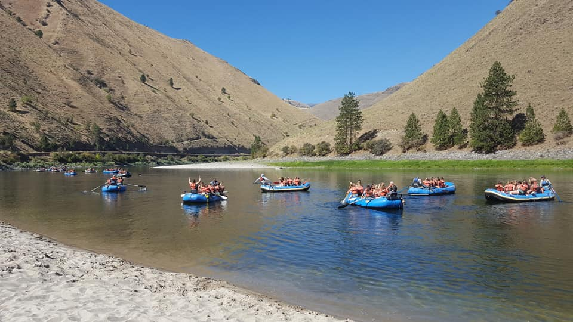

Contact Us
For inquiries and reservations, please get in touch with us.
ContactApurimac River Rafting

The Apurimac river (Speaker of the Gods) or (means “the oracle”) in the native Inca Language, is the most direct source of the Amazon River, making it the longest river in the world. It has different sections, some of them are very good for rafting. This river rafting is rated among the 10 best rafting trips in the world. We start the trip in Cusco at 3,400 mts altitude and drive down to the canyon at 2200 meters. So, the weather is much warmer.
Salmon River Rafting
Salmon River Experience first applied for our outfitters’ license in 1978 with the goal of providing the highest quality, affordable whitewater adventures available, which are both fun and adventurous while at the same time sensitive to the cultural and environmental needs of the river. SRE started with a yellow school bus, 4 used rafts and 16 life jackets. Now, over three decades later we are able to accommodate over 300 people a day with a fleet of self bailing rafts, kayaks, and support vehicles.
White Water Rafting

Since owner / manager Jon Dahl's first trip here with the legendary Kingsley Holgate on the Afrika Odyssey trip in 1993 , the Uganda tourism industry has developed at a very steady rate and Nile River Explorers has led the way in adventure tourism.
| Trip Name | Duration | Price |
|---|---|---|
| Apurimac River Rafting | 7 days | $1000 |
| Salmon River Rafting | 5 days | $800 |
| White Water Rafting | 3 days | $200 |